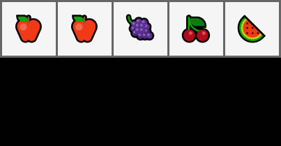
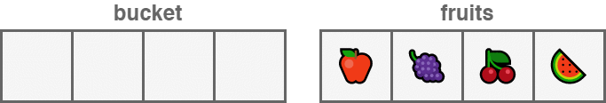
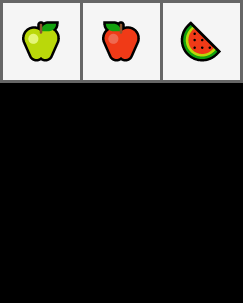
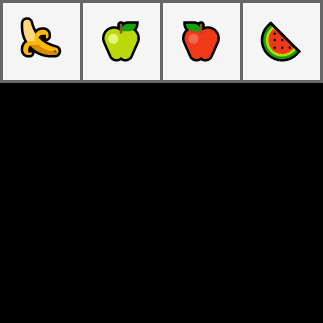
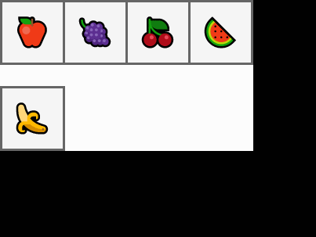
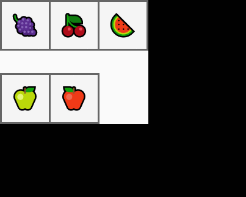
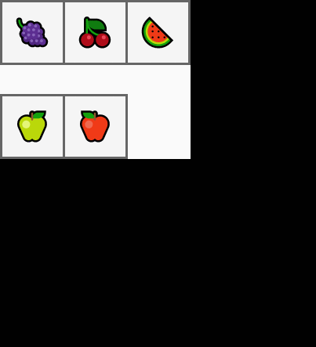

Data Structures
This page describes the data structures of go language and their usages in general programming.
Array¶
Arrays are structures that enable us to keep the same types of data together. For example; A list consisting of 4, 5, 19 and 25 defines an array. Go does not allow us to create arrays from different data types.
Definition¶
Arrays are basically defined as [Size]Type. We can see several ways to create arrays below.
An array capable of holding 3 units of type string.
var fruits[3]string
When defined as such, each field in the array is filled with the default value of the data type.
Based on this example, it will be defined as ["", "", ""]. We can change these values ​​by accessing them on their indexes.
fruits[0] = "🍌"
fruits[1] = "ğŸ"
fruits // [🌠ğŸ]
If we use a data type other than the one defined for Array, we will encounter an error.
arr [2] = 1
cannot use 1 (type int) as type string in assignment
We can define the same array in a shorter way.
fruits := [3]string{"🍌", "ğŸ"}
fruits // [🌠ğŸ]
In this definition, we assign a 3 unit long array whose first 2 elements we directly define to the variable 'arr'.
 Â
If we are going to create the arrayi with the values, we can leave the dimension calculation part to compiler using the expression ...
fruits := [...]string{"🍌", "ğŸ", "🍉"}
fruits // [🌠ğŸ 🍉]
Using with Loop
Arrays can be used basically in 2 ways with the for loop.
1- Accessing with Index.
fruits := [3]string{"🍌", "ğŸ", "🍉"}
for index := range fruits {
fruit := fruits[index]
fmt.Println(fruit)
}
2- By directly accessing the value.
fruits := [3]string{"🍌", "ğŸ", "🍉"}
for _, fruit := range fruits {
fmt.Println(fruit)
}
Slice¶
Slices are very similar to arrays in terms of usage. The difference of slices is that their size is dynamic.
When defining slice, we use the structure of []Type as in the array, but we leave the brackets empty.
// define nil slice
var slc []int
// assigning value to nill slice
slc = []int{12, 24, 39}
// direct identification
slc := []int{12, 24, 39}
make¶
We can also use the make function to define the slice. The first parameter of the make function determines the size of the slice to be created.
If we make a slice by defining only its size it will only allocate memory total of the size of its item type. And if we later append new items into the slice it will allocate some more memory in runtime.

// define by size
n_items = 3
slc := make([]int, n_items)
Allocating new memory in runtime sometimes can be costly. If we have an estimation over the size of the slice; we can give a third parameter to the make function to pre-allocate some more memory.

// definition by size and capacity
n_items = 3
capacity := 5
slc := make([]int, n_items, capacity)
Slice Operations¶
While creating the slice, it is filled with the default value of the data type that it will hold, as much as its capacity. However, only part of its length can be accessed.
If we want to increase the size of a slice, we can use the append andcopy functions for this.
mutate¶
When we resize a slice and assign it to another variable, changes in the new slice will also affect the original slice.

fruits := []string{"ğŸ", "ğŸ", "🍇", "🍒", "🍉"}
apples := fruits[:2]
apples[0] = "ğŸ"
apples[1] = "ğŸ"
Â
apples // [ğŸ ğŸ]
fruits // [ğŸ ğŸ 🇠💠ğŸ‰]
copy¶
copy allows us to copy one slice of another slicea of ​​the same or larger capacity and returns how many elements are copied.

bucket := make([]string, 5)
fruits := []string{"ğŸ", "🍇", "🍒", "🍉"}
n_copied := copy(bucket, fruits)
n_copied // 5
bucket // [ğŸ 🇠🈠ğŸ‰]
When copying a slice, the elements replace the elements in the same index in the target slice.
fruits := []string{"🍇", "🍒", "🍉"}
apples := []string{"ğŸ", "", "ğŸ"}
copy(fruits, apples)
fruits // [ğŸ ğŸ]
filter¶
We can filter the slice elements according to a certain criterion.

fruits := []string{"ğŸ", "ğŸ", "🍉", "ğŸ", "ğŸ"}
apple_criteria := "ğŸ"
apples := []string{}
for _, fruit := range fruits {
if fruit == apple_criteria {
apples = append(apples, fruit)
}
}
apples // [ğŸ ğŸ]
append¶
The append function takes the slice that we will increase in size as the first
parameter and the elements we will add later and return a new slice containing
all the elements to us. Therefore, it is necessary to keep the return value
in a variable (usually the old slice variable).
bucket := []string{"ğŸ", "🍇", "🍒", "🍉"}
green_apple := "ğŸ"
bucket = append(bucket, green_apple)
bucket // [ğŸ 🇠💠🉠ğŸ]
pop¶
In the example below, we have removed the last element of the slice and assigned it to a variable.

fruits := []string{"ğŸ", "ğŸ", "🍉"}
item, fruits := fruits[len(fruits) -1], fruits[:len(fruits) -1]
item // 🍉
fruits // [ğŸ ğŸ]
push front (unshift)¶
In this example, we put a new element at the beginning of the slice.

fruits := []string{"ğŸ", "ğŸ", "🍉"}
banana := "🍌"
fruits = append([]string{banana}, fruits ...)
fruits // [🌠ğŸ ğŸ 🍉]
pop front (shift)¶
In this example, we removed the first element of the slice and assigned it to a variable.

fruits := []string{"🍌", "ğŸ", "ğŸ", "🍉"}
banana, fruits := fruits[0], fruits[1:]
banana // 🍌
fruits // [ğŸ ğŸ 🍉]
insert¶
If we want to add a new element to any part of the slice; we can use these methods.

fruits := []string{"ğŸ", "🍇", "🍒", "🍉"}
banana := "🍌"
insert_index := 2
fruits = append(
fruits[:insert_index],
append([]string{banana}, fruits[insert_index:]...)...,
)
fruits // [ğŸ 🇠🌠💠ğŸ‰]
Memory Concern
The
append([]string{banana}, fruits[insert_index:] ...)section in line 7 creates a new slice and copies the elements of the slicefruits[insert_index:]to the created slice. These elements are then copied to thefruitsslice.Creating a new slice and copying for the 2nd time can be avoided.

fruits := []string{"ğŸ", "ğŸ", "🍉"}
banana := "🍌"
insert_index := 2
fruits = append(fruits, "")
copy(fruits[insert_index + 1:], fruits[insert_index:])
fruits[insert_index] = banana
fruits // [ğŸ ğŸ 🌠ğŸ‰]
expand¶
If we want to combine one slice and the other, we can use the following methods.

bucket := []string{"🍇", "🍒", "🍉"}
apples := []string{"ğŸ", "ğŸ"}
bucket = append(bucket, apples...)
bucket // [🇠💠🉠ğŸ ğŸ]
In the example below, we have combined the elements after the index determined by apples in line 7. Afterwards, we added these slice elements to the bucket items up to the index we determined.

bucket := []string{"🍇", "🍒", "🍉"}
apples := []string{"ğŸ", "ğŸ"}
expand_index := 2
bucket = append(
bucket [:expand_index]
append(apples, bucket[expand_index:]...)...,
)
bucket // [🇠💠ğŸ ğŸ 🍉]
cut¶
If we want to subtract a certain range in the slice, we can use the method below. This method will add the elements up to the start index we have specified in Slice and the elements after the end index. Thus, we will frustrate the elements in between.

edibles := []string{"ğŸ", "🍇", "🍒", "🍉", "🌶", "🍆", "🌽", "🥔"}
cut_start_index, cut_end_index := 4, 6
Â
edibles = append(edibles[:cut_start_index], edibles[cut_end_index:]...)
edibles // [ğŸ 🇠💠🉠🌽 🥔]
cut (memory safe)¶
If we store memory addresses in slice, operations can cause memory leak. The reason for this is that after a portion of slice is deleted, it can keep the reference of the deleted elements.
In addition to the operations we have done in the examples below, we filled in the fields that were idle after my process with nil values. Thus, garbage collector can understand that these areas will no longer be used and bring them back to the system.

apple, grapes, cherry, wmelon := "ğŸ", "🍇", "🍒", "🍉"
pepper, egplnt, corn, potato := "🌶", "🍆", "🌽", "🥔"
edibles := []*string{&apple, &grapes, &cherry, &wmelon, &pepper, &egplnt, &corn, &potato}
cut_start_index, cut_end_index := 4, 6
copy(edibles[cut_start_index:], edibles[cut_end_index:])
cleanup_index := len(edibles) - cut_end_index + cut_start_index
for free_index, free_end := cleanup_index, len(edibles); free_index < free_end; free_index++ {
edibles[free_index] = nil
}
edibles = edibles[:cleanup_index]
edibles // [ğŸ 🇠💠🉠🌽 🥔]
delete¶
If we want to delete an element in the slice using its index, we can use the following method.
edibles := []string{"ğŸ", "🍇", "🍒", "🍉", "🌶", "🍆", "🌽", "🥔"}
index_of_cherry := 2
edibles = append(edibles[:index_of_cherry], edibles[index_of_cherry + 1:]...)
edibles // [ğŸ 🇠🉠🌶 🆠🌽 🥔]

Delete Without Preserving Order¶
We can also do the deletion by ignoring the array order. In the example below, we have replaced the last element in the slice with the element we want to delete. Then we reduced the size of the slice by 1.
edibles := []string{"ğŸ", "🍇", "🍒", "🍉", "🌶", "🍆", "🌽", "🥔"}
index_of_cherry := 2
edibles[index_of_cherry] = edibles[len(edibles) -1]
edibles = edibles[:len(edibles) -1]
edibles // [ğŸ 🇠🥔 🉠🌶 🆠🌽]
Map¶
One of the most frequently used data types is maps. map holds values with a unique keys.
Definition¶
Maps can be defined as map[KeyType]ValueType or make(map[KeyType]ValueType).
var mymap = map[string]string{}
mymap = make(map[string]string)
Assigning Value¶
monty_python_films_by_year := map[string]string {
"1971": "Monty Python and the Holy Grail",
"1979": "Life of Brian",
}
monty_python_films_by_year["1983"] = "The Meaning of Life"
We can access the values ​​we assign using the same key.
film_name := monty_python_films_by_year["1983"]
film_name // The Meaning of Life
When accessing an element of Mapin, we can access an additional value that indicates whether the element is registered in the map.
film_name, registered := monty_python_films_by_year["2019"]
if !registered {
fmt.Println("Monty python did not relase a film at 2019")
} else {
fmt.Println(film_name)
}
Accessing to values using for¶
Map values are accessible in 2 ways.
1- We can iterate over keys by using one variable in the for loop.
monty_python_films_by_year := map[string]string{
"1971": "Monty Python and the Holy Grail",
"1979": "Life of Brian",
"1983": "The Meaning of Life",
}
for year := range monty_python_films_by_year {
film_name := monty_python_films_by_year[year]
fmt.Println(film_name, "was released at", year)
}
2- We can iterate over both keys and values by using two variable in the for loop.
for year, film_name := range monty_python_films_by_year {
fmt.Println(film_name, "was released at", year)
}
/*
Monty Python and the Holy Grail was released at 1971
Life of Brian was released at 1979
The Meaning of Life was released at 1983
*/
delete¶
We can use the delete function to delete an element on the map.
monty_python_films_by_year := map[string]string{
"1971": "Monty Python and the Holy Grail",
"2016": "Batman v Superman",
}
delete(monty_python_films_by_year, "2016")
_, registered := monty_python_films_by_year["2016"]
registered // false
len(monty_python_films_by_year) // 1
struct¶
Structs are user-defined data structures that can hold different types of data with their names.
Definition¶
Structs can be defined as follows.
type StructName struct{
field fieldType
}
We can define the fields of the same type of struct in one line.
type Film struct {
name, director string
imdb float32
release_year int
}
var new_film = Film{}
new_film // {"" "" 0 0}
We can also give tags to the struct fields.
type Film struct {
Name string `json:"film_name"`
Director string `json:"director_name"`
Imdb float32 `json:"imdb_score"`
ReleaseYear int `json:"year_of_release"`
}
Tags are popular among ORMs and serialization libraries that deal with type conversion. These tags can be accessed with the 'reflect` module.
f := Film{}
t := reflect.TypeOf(f)
for _, f := range []string{"Name", "Director", "Imdb", "ReleaseYear"} {
field, found := t.FieldByName(f)
if !found {
continue
}
fmt.Println(field.Tag.Get("json"))
}
/*
film_name
director_name
imdb_score
year_of_release
*/
Assigning Value¶
A struct can be created by giving its parameters in order.
new_film := Film{"Mad Max: Fury Road", "George Miller", 8.1, 2015}
new_film // {Mad Max: Fury Road George Miller 8.1 2015}
Similarly, it can be created by specifying the parameters and the values with the separator :.
new_film := Film{
Name: "Ran",
Director: "Akira Kurosawa",
Imdb: 8.2,
ReleaseYear: 1985,
}
new_film // {Ran Akira Kurosawa 8.2 1985}
If some of the fields are left blank while creating Struct; these fields are defined by the null values of that data type.
new_film := Film{
name: "Batman v Superman",
director: "Zack Snyder",
release_year: 2016,
}
new_film // {Batman v Superman Zack Snyder 0 2016}
Anonymous struct¶
In some special cases, we may need to define structs in the function body.
provider_config := struct {
name string
baseUrl string
apiKey string
}{
name: "mapbox",
baseUrl: "https://api.mapbox.com/geocoding/v5/",
apiKey: "123asds123",
}
provider_config // {mapbox https://api.mapbox.com/geocoding/v5/ 123asds123}
Anonymous fields¶
Struct can also be defined without specifying field names. In this case, the data types of the fields must be different from each other.
type Item struct {
string // code
int // quantity
float32 // price
}
item := Item{
"child-seat-1",
5,
20.1,
}
item // {child-seat-1 5 20.1}
Promoted fields¶
A struct can be used wintin another struct without giving the a field name. In this case,
inner struct is accessed by its own name. Based on the example below, Content in Page can be accessed as page.Content.
type Content struct {
body string
size int
}
type Page struct {
nextUrl string
previousURL string
Content
}
content := Content{
body: "<h1>Hi</h1>",
size: 11,
}
page := Page{
nextUrl: "http://.../3",
previousURL: "http://.../1",
Content: content,
}
page // {http://.../3 http://.../1 {<h1>Hi</h1> 11}}
page.Content // {<h1>Hi</h1> 11}
Functions¶
In general, functions in GO are defined in the following structure.
func fonksiyon_name([list of parameters]) [returning data types]
{
function body
}
func sigmoid(value float64) float64 {
return 1.0 / (1.0 + math.Exp(-value))
}
sigmoid(0.5) // 0.62246
Parameters¶
Parameters given to functions are copied. For this reason, modifying the parameters do not affect the status of variables outside the function.
type Wallet struct {
userID int
balance float64
deposit float64
}
func withdraw(wallet Wallet, amount float64) {
wallet.balance -= amount
}
In the code above, we have simply defined a wallet structure and the 'withdraw' function that can withdraw money from the wallet. In the lines below, we created a wallet and used it with withdraw function.
wallet := Wallet{
userID: 1,
balance: 30000.12,
deposit: 40000.01,
}
item_price := 10023.0
withdraw(wallet, item_price)
wallet.balance // 3000.12
As you can see, the money in the wallet has not changed. We can work around this in 2 ways.
Method 1, we can return the new balance of the wallet and update the wallet later.
func withdraw(wallet Wallet, amount float64) float64 {
new_balance := wallet.balance - amount
return new_balance
}
wallet.balance = withdraw(wallet, item_price)
wallet.balance // 19977.12
This method changes the intended use of the withdraw function, whose job is to withdraw money from the wallet.
Method 2, we can give the address of the wallet variable as parameter.
func withdraw(wallet *Wallet, amount float64) {
wallet.balance -= amount
}
withdraw(&wallet, item_price)
wallet.balance // 19977.12
The disadvantage of this method is that it is not thread safe. When we want to withdraw money from the wallet with different threads, it will be difficult to keep track of the balance status.
Dynamic parameters¶
We can dynamic parameters in GO functions.
To do that, we should put ... sign before the parameter.
func ReLU(nums ...float64) []float64 {
new_nums := make([]float64, len(nums))
for idx, value := range nums {
if value > 0 {
new_nums[idx] = value
} else {
new_nums[idx] = 0.
}
}
return new_nums
}
nums := []float64{1., 0.2, 0., 0., -0.1, 0.1}
nums = ReLU(nums...)
nums // [1 0.2 0 0 0 0.1]
Return Values¶
Returning multiple values¶
Go functions are able to return multiple values.
It is necessary to define the values to be returned in order between ().
func swap(first_arg, second_arg string) (string, string) {
return second_arg, first_arg
}
var language1, language2 string = "Python", "GO"
language1, language2 = swap(language1, language2)
language1, language2 // GO Python
Naming Return Values¶
We can name the return values of the functions and determine the values with these variables. Since the named return values will take the null value of the data type, they can also be used as the default return values of the function.
type Record struct {
id int
data string
}
type DB struct {
records []Record
locked bool
}
func BulkCreate(records []Record, db *DB) (n_created int, err error) {
if db.locked {
err = errors.New("DB is locked")
} else {
db.records = append(db.records, records...)
n_created = len(records)
}
return n_created, err
}
db := &DB{
records: []Record{},
locked: true,
}
data := []Record{}
for i := 0; i < 100; i++ {
rec := Record{
id: i,
data: "test",
}
data = append(data, rec)
}
n_created, err := BulkCreate(data, db)
if err != nil {
fmt.Println(err)
}
Anonymous Function¶
Functions in GO are also data types and can be assigned to variables within functions.
records := []int{0, 1, 2, 3, 4, 5, 6, 7, 8, 9}
batchSize := 3
batchedRecords := func(data []int, batchSize int) [][]int {
var batches [][]int
for batchSize < len(data) {
data, batches = data[batchSize:], append(batches, data[0:batchSize:batchSize])
}
batches = append(batches, data)
return batches
}(records, batchSize)
batchedRecords // [[0 1 2] [3 4 5] [6 7 8] [9]]
Methods¶
There are no classes and thus class methods in GO. However, similar experience can be achieved by adding an additional argument called `receiver' to the functions.
type Connection struct {
host string
port int
timeOut int
isClosed bool
}
func (conn *Connection) Close() {
conn.isClosed = true
fmt.Println("Connection", conn.host+":"+strconv.Itoa(conn.port), "closed.")
}
In above, we have added (conn * Connection) to the Close
function in order to define the Connection as receiver. Now we are able to access the function via the Connection type as c.Close ().
c := Connection{
host: "0.0.0.0",
port: 8080,
timeOut: 1,
isClosed: false,
}
c.Close() // Connection 0.0.0.0:8080 closed.
Pointer receiver | Value receiver¶
As with the function parameters, it should be decided whether the receivers will be defined as values or memory addresses.
We can also use receivers for other data types.
type Iterable []int
func (iterable *Iterable) Append(items ...int) {
*iterable = append(*iterable, items...)
}
arr := Iterable{1, 2}
arr.Append(4, 5, 6)
arr // [1 2 4 5 6]
Errors¶
In GO, we can create our own error types.
To achieve this, the data type must implement the Error method that takes no parameters and returns a string.
Definition¶
In the example below, we have defined a new error called 'HTTPError', which indicates the HTTP code and the reason for the error.
type HTTPError struct {
Status int
Reason string
}
func (e HTTPError) Error() string {
return fmt.Sprintf("%v: %v", e.Status, e.Reason)
}
func MakeRequest() error {
return HTTPError{
Status: 400,
Reason: "Bad Request",
}
}
err := MakeRequest()
if err != nil {
fmt.Println(err)
}
Interface¶
Interfaces are structures that specify the methods an object can have. Therefore, interfaces express the behavior of objects. For example; data can be read from or written to a file. If an interface contains read and write methods and the file object has these methods, it can be said that the file has implemented this interface.
The main purpose of Interfaces is to create a common protocol for different data types that show the same behavior but contains a different implementation.
Definition¶
We do not need to use expressions like class File implements IO to indicate that one type uses an interface. GO establishes the relationship
between interfaces and types by sharing the same methods.
type IO interface {
Read() []byte
Write([]byte) int
}
type File struct {
name string
content []byte
}
func (file *File) Read() []byte {
return file.content
}
func (file *File) Write(content []byte) int {
file.content = append(file.content, content...)
return len(content)
}
type Socket struct {
ip string
port int
buffer []byte
}
func (sock *Socket) Read() []byte {
return sock.buffer
}
func (sock *Socket) Write(stream []byte) int {
sock.buffer = append(sock.buffer, stream...)
return len(stream)
}
We have defined the 'IO' interface that defines the 'Read' and 'Write' methods, and the 'File' and 'Socket' data types with these methods.
Since the Log method takes the IO interface as a parameter, it can read the data and do its job without worrying about the data type.
type Logger struct {
}
func (log *Logger) Log(io IO) {
for _, data := range io.Read() {
fmt.Print(string(data))
}
fmt.Println()
}
file := &File{name: "test"}
sock := &Socket{ip: "0.0.0.0", port: 21}
logger := Logger{}
data := []byte("data")
file.Write(data)
sock.Write(file.Read())
logger.Log(file) // "data"
logger.Log(sock) // "data"
Using Multiple Interfaces¶
GO types can implement multiple interfaces. For this, data types only needs to have the methods of the interface.
type Reader interface {
Read() []byte
}
type Writer interface {
Write([]byte) int
}
type File struct {
name string
content []byte
}
func (file *File) Read() []byte {
return file.content
}
func (file *File) Write(content []byte) int {
file.content = append(file.content, content...)
return len(content)
}
var file Reader = &File{
name: "test",
content: []byte("data"),
}
var sock Writer = &Socket{
ip: "0.0.0.0",
port: 21,
}
sock.Write(file.Read())
sock.buffer // sock.buffer undefined (type Writer has no field or method buffer
Type Conversion (Assertion)¶
Type assertion allows access to the concrete value of the underlying data type.
s := sock.(*Socket)
string(s.buffer) // "data"
We can check whether the type we are asserting correctly implements the interface.
type Serializer interface {
Serialize()
}
s, ok := sock.(Serializer)
s, ok // nil, false
Empty Interface¶
Interfaces are also data types and can be used in the same way. Empty interface in GO defined as interface{}.
Since it has no method, the requirements of the empty interface are met by all types. This unique feature of the empty interface allows us to define dynamic parameters and values.
type Booking struct {
Provider string
CustomerID string
ExtraProviderParams interface{}
}
booking1 := Booking{
Provider: "ACL",
CustomerID: "customer-01a",
ExtraProviderParams: map[string]interface{}{
"Passengers": 4,
"PaymentTime": "after-booking",
},
}
booking2 := Booking{
Provider: "DCM",
CustomerID: "customer-03f",
ExtraProviderParams: []interface{}{
4, "after-booking",
},
}
booking1 // {ACL customer-01a map[Passengers:4 PaymentTime:after-booking]}
booking2 // {DCM customer-01a [4 after-booking]}
Type Checking¶
Interface types can be controlled by the switch structure.
Stringify function allows us to use different data types in the function by taking interface{} as parameter. We will check the int, string and float data types and convert them to string.
func Stringify(value interface{}) (string, error) {
switch value.(type) {
case string:
return value.(string), nil
case float32, float64:
return fmt.Sprintf("%.2f", value), nil
case int:
return fmt.Sprintf("%d", value), nil
default:
return "", errors.New("Invalid type")
}
}
Stringify(12) // "12"
Stringify(12.52312313) // "12.52"
Stringify("test") // "test"